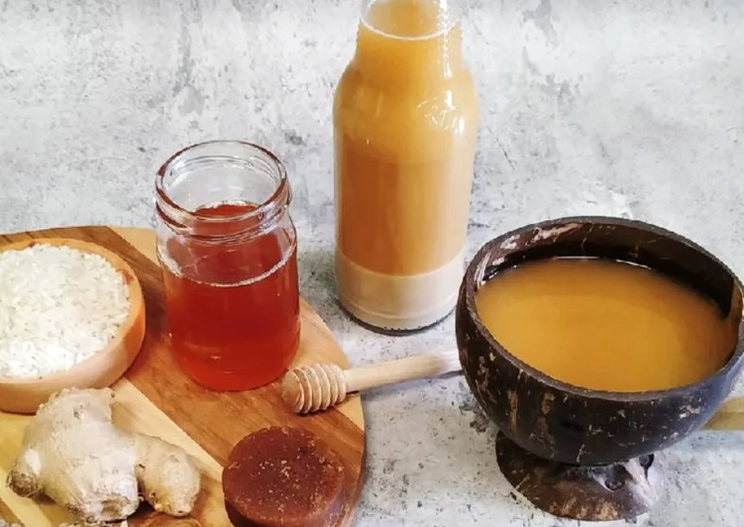
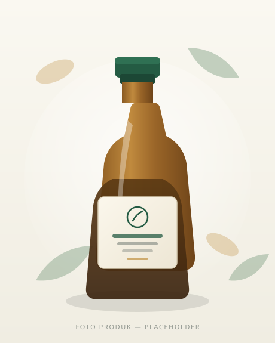

Aktivitas Padat
Rutinitas sehari-hari membuat tubuh membutuhkan perhatian dan perawatan.
whatsappNumber di js/config.js agar tombol pemesanan aktif.
Kenali jamu pegal linu berbahan herbal pilihan dengan cita rasa tradisi lokal yang dikemas lebih praktis untuk menemani keseharian.

Aktivitas sehari-hari, pekerjaan, dan rutinitas fisik membuat banyak orang mulai memperhatikan pilihan produk yang digunakan untuk menjaga kenyamanan tubuh.
Rutinitas sehari-hari membuat tubuh membutuhkan perhatian dan perawatan.
Konsumen membutuhkan informasi yang jelas sebelum memilih produk herbal.
Konsumen ingin mengetahui bahan, produsen, cara konsumsi, dan informasi produk sebelum membeli.
Produk jamu tradisional dengan informasi komposisi, identitas produsen, dan cara penggunaan yang disajikan secara transparan.
Informasi produk disajikan apa adanya, sesuai kemasan dan keterangan produsen.

Jamu tradisional berbahan herbal pilihan yang diracik mengikuti resep warisan, dikemas praktis untuk menemani aktivitas harian Anda.
Komposisi, berat, dan nomor izin edar akan ditampilkan setelah data resmi dari produsen tersedia. Untuk pertanyaan cepat, silakan hubungi kami.
Empat hal yang membuat produk jamu lokal ini layak Anda kenali lebih dekat.
Mengenalkan kekayaan tradisi jamu yang berkembang di Sukoharjo.
Konsumen dapat mengetahui bahan yang digunakan dalam produk.
Informasikan bentuk kemasan dan cara konsumsi sesuai petunjuk produk.
Informasi asal produk dan produsen disajikan secara transparan.
Kami belum menampilkan ulasan konsumen. Sebagai gantinya, berikut cerita dan komitmen produsen di balik produk jamu ini.
Kami meracik jamu ini mengikuti resep keluarga yang diwariskan turun-temurun. Setiap bahan dipilih dengan pertimbangan tradisi dan ketersediaannya di daerah kami.
Kami percaya konsumen berhak tahu apa yang mereka konsumsi. Karena itu informasi bahan dan cara pemakaian kami sampaikan secara terbuka melalui halaman ini.
Produk ini dikemas agar praktis dibawa dan digunakan sehari-hari, tanpa menghilangkan cita rasa tradisional jamu asli Indonesia.
Bagian ini berisi cerita produsen, bukan ulasan konsumen. Testimoni pelanggan akan ditampilkan setelah tersedia dan mendapat persetujuan konsumen terkait.
Konfirmasi harga terbaru dan ketersediaan stok melalui tim pemesanan kami.
Harga belum ditampilkan pada halaman ini. Silakan hubungi kami untuk informasi harga terbaru, ongkos kirim, dan ketersediaan stok.
Jawaban di bawah mengikuti informasi yang tersedia pada label produk.
Komposisi lengkap tercantum pada label kemasan produk. Kami menampilkan daftar bahan pada halaman ini setelah data resmi dari produsen tersedia. Untuk informasi cepat, silakan hubungi kami melalui WhatsApp.
Cara penggunaan mengikuti petunjuk yang tercantum pada kemasan produk. Kami menyarankan Anda membaca petunjuk tersebut sebelum menggunakan produk.
Harga terbaru dapat dikonfirmasi melalui tim pemesanan kami via WhatsApp. Harga pada halaman ini akan diperbarui setelah ditetapkan oleh produsen.
Informasi nomor izin edar hanya akan ditampilkan setelah nomor tersebut diverifikasi. Silakan hubungi kami untuk konfirmasi terkini mengenai legalitas produk.
Pemesanan dilakukan melalui WhatsApp. Tekan tombol "Pesan Sekarang" pada halaman ini, lalu sampaikan paket yang Anda inginkan. Tim kami akan membantu proses selanjutnya.
Pengiriman ke luar Sukoharjo dapat didiskusikan dengan tim pemesanan. Jangkauan pengiriman dan biaya kirim akan dikonfirmasi saat pemesanan.
Ikuti petunjuk penyimpanan pada kemasan produk. Simpan sesuai keterangan produsen agar kualitas produk tetap terjaga.
Dapatkan informasi produk dan pilihan paket melalui tim pemesanan kami.
Hubungi kami untuk informasi produk dan ketersediaan.